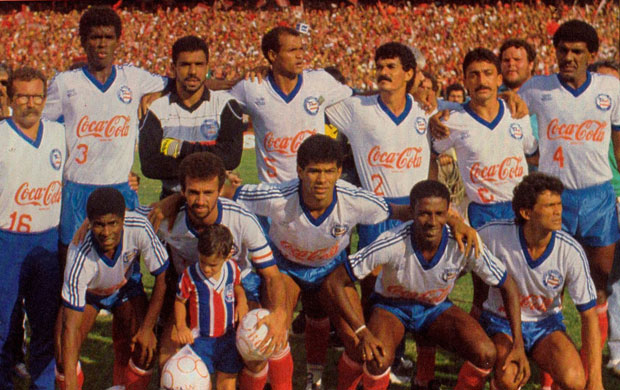
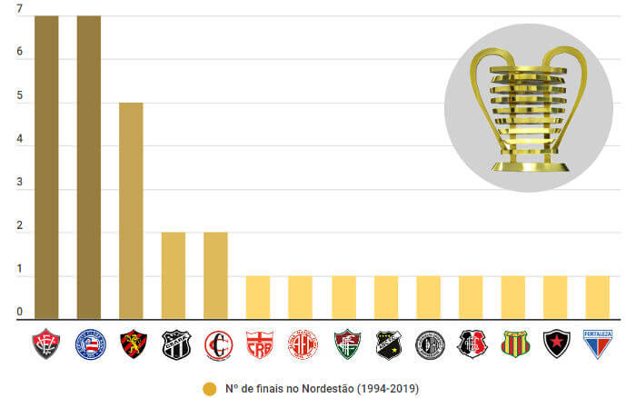

HISTÓRIA
A possível origem do que é a atual Copa do Nordeste de Futebol é um assunto controverso, historicamente a Copa do Nordeste sempre foi um torneio intermitente no calendário do futebol brasileiro. De fato, a gama de campeonatos deste porte seria bem mais ampla, algumas delas até com a chancela da Confederação Brasileira de Desportos (CBD, precursora da atual CBF). De 1946, quando foi disputado um torneio quadrangular em Natal, vencido pelo Fortaleza, até 1994, quando foi realizada a primeira Copa do Nordeste reconhecida pela CBF, foram disputados vários torneios de futebol de amplitude regional no Nordeste – com pesos diferentes, naturalmente – onde alguns clubes se intitulam campeões da copa Nordeste. Porém, a antiga discussão sobre a chancela oficial dos títulos desses torneios permanece com a CBF, que evita tocar no assunto sobre as competições anteriores a 1994, data da primeira Copa do Nordeste, também denominada de "Taça Governador Geraldo Bulhões". Curiosamente, foi a única reconhecida posteriormente, quando a confederação passou a organizar o certame. Além disso, foram realizadas também muitas competições amistosas entre dois ou três estados, mas que não são consideradas torneios regionais já que não houve a participação dos estados em sua maioria.
Todos os Finalistas
Ranking de finais da Copa do Nordeste de 1994 a 2019 (16 edições; 14 clubes) 1º) 7x – Vitória (97, 98, 99, 00, 02, 03 e 10) 1º) 7x – Bahia (97, 99, 01, 02, 15 , 17 e 18) 3º) 5x – Sport (94, 00, 01, 14 e 17) 4º) 2x – Ceará (14 e 15) 4º) 2x – Campinense (13 e 16) 6º) 1x – CRB (94) 6º) 1x – América-RN (98) 6º) 1x – Fluminense de Feira (03) 6º) 1x – ABC (10) 6º) 1x – ASA (13) 6º) 1x – Santa Cruz (16) 6º) 1x – Sampaio Corrêa (18) 6º) 1x – Botafogo-PB (19) 6º) 1x – Fortaleza (19) Ranking de finais por estado (até 2019, com 7 estados) 1º) 15x – Bahia (97*, 98, 99*, 00, 01, 02*, 03*, 10, 15, 17 e 18) 2º) 6x – Pernambuco (94, 00, 01, 14, 16 e 17) 3º) 3x – Ceará (14, 15 e 19) 3º) 3x – Paraíba (13, 16 e 19) 5º) 2x – Rio Grande do Norte (98 e 10) 5º) 2x – Alagoas (94 e 13) 7º) 1x – Maranhão (18)